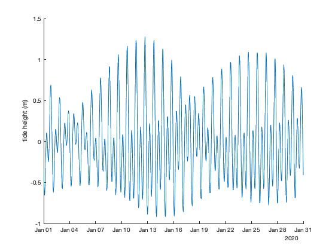
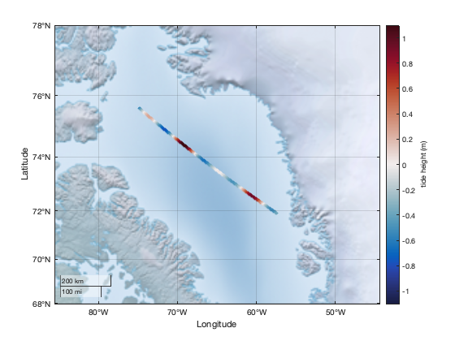
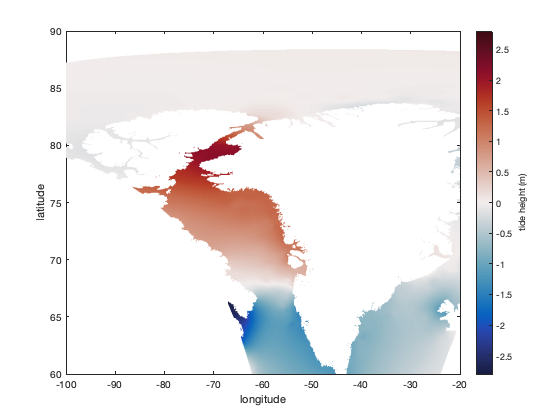
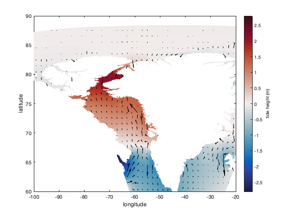
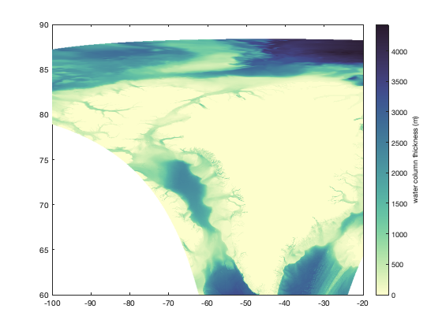
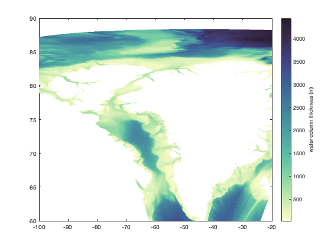
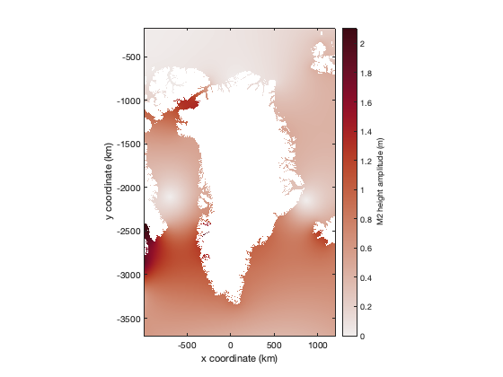

Getting Started with TMD
Back to Tide Model Driver Contents.
This page contains the code from the introductory video tutorial found on youtube.
Contents
1. Installing TMD
The first step toward getting started with TMD is to install the software on your computer. If you're reading this in the MATLAB documentation browser, I'll assume you've already done gotten TMD installed.
2. Getting tide model data
After you've installed the TMD functions, you'll need some tide model data. Go to the TMD GitHub repo for an up-to-date list of available tide models.
3. Getting help
- Online: The most up-to-date documentation can always be found on the TMD Github Repo. There you can also post issues if you find any bugs in the code.
- In MATLAB: If you're in MATLAB and you want help with a specific function, you can get plain-text help in the Command Window by typing help followed by the name of the function. For example:
help tmd_predict
To access formatted documentation with lots of examples for any of the primary TMD functions, type tmd followed by the function name. For example:
tmd tmd_predict
If you're not sure what function name you're looking for, just type tmd into the Command Window, and it will bring up a complete function list:
tmd
4. Predicting tides
The procedure for predicting tides is described in detail in the documentation for the tmd_predict function, but we'll cover a few quick examples here. After downloading your favorite tide model data file, unzip it, make sure MATLAB can find it, and then enter the location and times that you want to predict tides.
Single-location time series
Use the Gr1kmTM_v1 tide model to predict tides in Baffin Bay (74.6°N,68.2°W) for the month of January, 2020, at hourly resolution:
% Define a time array: t = datetime('jan 1, 2020'):hours(1):datetime('jan 31, 2020'); % Predict the tide time series: z = tmd_predict('Gr1kmTM_v1.nc',74.6,-68.2,t); figure plot(t,z) box off ylabel('tide height (m)')
Drift-track time series
Predicting a drift track is very similar to predicting a single-location time series, except you'll enter lat,lon arrays that are the same size as the time array.
Let's say you take a boat across Baffin Bay for two days in January 2020 and you want to predict tides along the path. The red in the scatterplot below corresponds to high tides you'll encounter along your journey.
% Two day time series: t = datetime('jan 10, 2020'):minutes(1):datetime('jan 12, 2020'); % Corresponding locations: lat = linspace(75.6,71.9,length(t)); lon = linspace(-74.8,-57.4,length(t)); z = tmd_predict('Gr1kmTM_v1.nc',lat,lon,t); figure geoscatter(lat,lon,20,z,'filled') geolimits([68 78],[-85 -45]) geobasemap colorterrain caxis([-1 1]*1.1) cb = colorbar; ylabel(cb,'tide height (m)') cmocean balance % optional colormap
Map-view snapshot
Suppose you just want a snapshot of the geographic distribution of tide heights across a wide area at a single instant. Let's pick 4:15 pm on January 12, 2020, and we'll choose an area around Baffin Bay.
% Define arrays of equally spaced lat,lon locations: lat = 60:0.05:90; lon = -100:0.1:-20; % Turn the arrays into grids: [Lon,Lat] = meshgrid(lon,lat); % Predict tides at 4:15 pm (UTC) on January 12, 2020: t = datenum('jan 12, 2020, 16:15'); Z = tmd_predict('Gr1kmTM_v1.nc',Lat,Lon,t); figure pcolor(lon,lat,Z) shading interp cb = colorbar; ylabel(cb,'tide height (m)') caxis([-1 1]*2.8) xlabel 'longitude' ylabel 'latitude' cmocean bal % optional colormap from Climate Data Toolox
You may also add column-averaged water velocity vectors like this:
u = tmd_predict('Gr1kmTM_v1.nc',Lat,Lon,t,'u'); v = tmd_predict('Gr1kmTM_v1.nc',Lat,Lon,t,'v'); hold on q = quiversc(lon,lat,u,v,'k'); % quiversc is in Climate Data Toolbox q.AutoScaleFactor = 1.5; % lengthens the arrows
5. Accessing tide model data
You can use tmd_interp to interpolate quantities from the model data file, like ocean masks or constituent coefficients. Here we get the water column thickness (essentially the ocean depth) at every grid point we defined above:
wct = tmd_interp('Gr1kmTM_v1.nc','wct',Lat,Lon); figure pcolor(lon,lat,wct) shading interp cb = colorbar; ylabel(cb,'water column thickness (m)') cmocean deep % optional colormap
Above, the water column thickness is zero wherever there's land. Perhaps you'd prefer to set the land grid cells to NaN rather than zero. Here's how: Just interpolate the ocean mask, set the non-ocean pixels to NaN, and plot again:
ocean = tmd_interp('Gr1kmTM_v1.nc','mask',Lat,Lon); wct(~ocean) = NaN; figure pcolor(lon,lat,wct) shading interp cb = colorbar; ylabel(cb,'water column thickness (m)') cmocean deep % optional colormap
Sometimes you don't want to interpolate, and you just want the raw data. Use tmd_data to get things like height coefficients:
% Load complex height coefficients: [h,x,y,cons] = tmd_data('Gr1kmTM_v1.nc','h'); % Examine outputs: whos h x y cons
Name Size Bytes Class Attributes cons 1x8 864 cell h 3530x2190x8 989529600 double complex x 2190x1 17520 double y 3530x1 28240 double
Above, we see the the Gr1kmTM_v1.nc file conntains eight tidal constituents. Here's what they are:
cons
cons =
1×8 cell array
Columns 1 through 7
{'m2'} {'s2'} {'k1'} {'o1'} {'n2'} {'p1'} {'k2'}
Column 8
{'q1'}
You can alternatively access constituents using the tmd_conlist function:
tmd_conlist('Gr1kmTM_v1.nc')
ans =
1×8 cell array
Columns 1 through 7
{'m2'} {'s2'} {'k1'} {'o1'} {'n2'} {'p1'} {'k2'}
Column 8
{'q1'}
The variable h is a complex data cube with dimensions 3530x2190x8, which correspond to the y and x dimensions and the eight constituents. If you'd just like the amplitude (not complex) of the m2 coefficient, enter 'hAm' and the constituent you desire, like this:
% Load the M2 global tidal height amplitude: [M2,x,y] = tmd_data('Gr1kmTM_v1.nc','hAm','constituents','m2'); % Load the global ocean mask: ocean = tmd_data('Gr1kmTM_v1.nc','mask'); figure h=imagesc(x,y,M2); h.AlphaData = ocean; % makes land transparent axis xy image % sets axes equal and normal cartesian coordinates cb = colorbar; ylabel(cb,'M2 height amplitude (m)') xlabel('x coordinate (km)') ylabel('y coordinate (km)') cmocean amp % optional colormap from Climate Data Toolbox
Author Info
This page was written by Chad A. Greene, June 2022, updated August 2023.